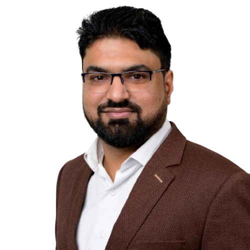

Start with the constraint
Architecture should respond to the actual operating, commercial and team context—not an idealized diagram.
A little about me
I’m a Sydney-based software engineer who has spent 16+ years building systems, leading teams, and learning that the simplest workable answer is often the best one.

I started out writing software and gradually found myself taking responsibility for the bigger picture: architecture, delivery, difficult trade-offs, and helping teams move in the same direction. I’ve done that across Pakistan, the UAE, and now Australia.
Along the way I’ve worked on desktop applications, web platforms, cloud systems, enterprise integrations, and software used by government and business teams. I’ve collaborated with CTOs, business stakeholders, vendors, and engineers—and I’m comfortable translating between all of them.
These days I’m especially interested in cloud architecture, thoughtful modernization, and practical uses of AI. I like new technology, but I’m not interested in adding it just because it is new. It has to make the system or the work genuinely better.
Outside work, I’m a dad to two little legends. They are a good daily reminder to be patient, stay curious, and explain things clearly.
Working principles
Architecture should respond to the actual operating, commercial and team context—not an idealized diagram.
The strongest design is usually the one a capable team can operate, change and explain confidently.
Technology choices should make delivery, reliability or the customer experience meaningfully better.
Career journey
2024–present
FUJIFILM Data Management Solutions · Sydney
2023–2024
Precision Group · Sydney
2020–2022
Arkitektz · Karachi
2017–2020
Dubai Airports · Dubai
2015–2017
Cyquent Technologies · UAE
2009–2015
Axact · Karachi